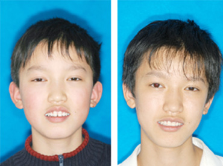
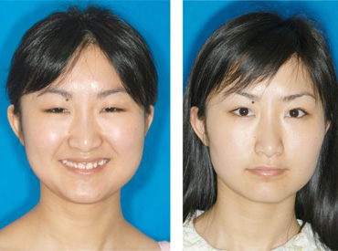

关于惠泽
惠泽康悦
荣誉成就
设备环境
服务项目
口腔种植
牙齿矫正
牙齿美容
儿童牙科
老人牙科
口腔修复
根管治疗
牙周病
洗 牙
专家团队
牙痛治疗专家
种植美学修复专家
口腔正畸专家
经典案例
种植牙效果
正畸前后对比
全口义齿效果
下颌半口义齿
首页
>
经典案例
>正畸前后对比
正畸前后对比
孙某，9岁，学生。妈妈发现小孩反颌(俗称：地包天)后就诊，FRIII矫正器矫正，12个月完成，小朋友的凹面型得到显著改善。
惠泽专家提醒：小孩的反颌(地包天)要早期矫正，越早越好，否则会引起小孩上颌发育不足，成凹面形。


惠泽康悦
|
服务项目
|
专家团队
|
会员中心
|
经典案例
| 惠康动态
COPYRIGHT 2014 惠泽康悦 齿科 深圳宝安区西乡港隆城购物中心二楼